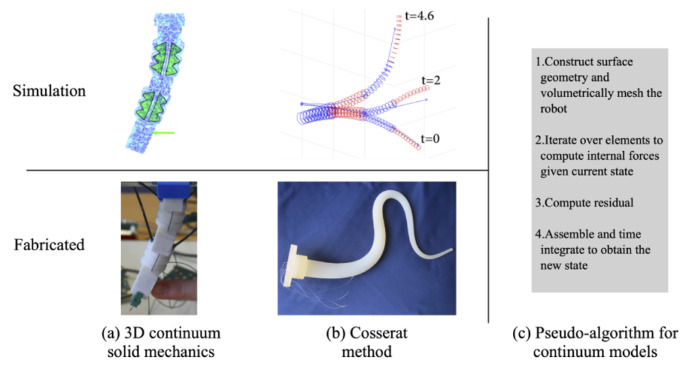
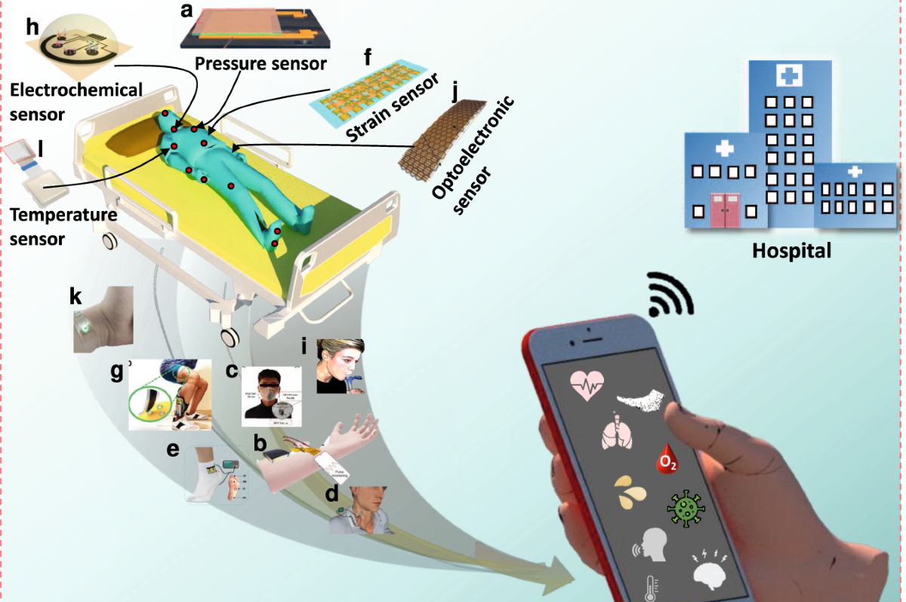

Introduction
During the embodied intelligence lecture, we explored how modern robotic systems integrate hardware, software, and environmental interactions. The key lies in devising a methodology that enables the robot’s physical body (hardware) and its controller (software) to function in tandem within a specific environment, rather than treating them as separate entities. This article documents the two main topics of discussion and delves into their potential applications in the fields of pervasive media and interactive art.

Mengaldo, G., Renda, F., Brunton, S.L., Bächer, M., Calisti, M., Duriez, C., Chirikjian, G.S. and Laschi, C. (2022) ‘A concise guide to modelling the physics of embodied intelligence in soft robotics’, Nature Reviews Physics, 4(9), pp. 595–610. Available at: https://inria.hal.science/hal-03921606 (Accessed: 13 March 2025)
Embodied Intelligence and Soft Robotics
Introduction:
Embodied intelligence is a robotic design concept that considers the robot’s body, controller, and environment as an integrated interactive system. Soft robotics, as a part of this concept, emphasizes the use of soft and deformable structures, enabling robots to interact more safely with humans, animals, and the environment.
Basic Working Principles:
- The design of these robots focuses on compliance. Similar to human joints, they can adjust their hardness or softness according to the situation.
- Some intelligence is naturally achieved through mechanical structures (such as springs absorbing impacts), rather than relying entirely on complex computations.
- This design reduces computational energy consumption, making the robots safer and more adaptable.
Three Potential Applications in Pervasive Media or Interactive Art:
- Interactive Performances: Soft robots can safely navigate through the audience and participate in dances, dramas, or live installations, enhancing the emotional interaction of the performance.
- Tactile Narrative Devices: Use soft structures to create art sculptures or wearable works that can be touched and perceive users’ movements.
- Bioinspired Art Installations: Robot installations that mimic the movements of the natural world (such as fish swimming or plant responses), breaking down the boundaries between technology and nature.

Tada, M., Tada, K. and Maeno, T. (2023) Soft tactile interfaces for interactive systems. npj Flexible Electronics [online]. Available at: https://www.nature.com/articles/s41528-023-00261-4 (Accessed: 13 March 2025)
Soft Sensors for Health Monitoring
Introduction:
We also learned about a special project that developed a soft sensor capable of identifying internal human tumors by detecting pressure differences. This sensor is made from saline solution and soft membranes, mimicking the softness of the human intestine.
Basic Working Principles:
- The sensor consists of two layers of flexible membranes with saline solution filled in between.
- When pressure is applied (such as when pressing on tissues), the distance between the two membranes changes, thereby altering the electrical signals.
- By detecting these signal changes, it can sense the differences in tissue hardness, thus aiding in the early detection of tumors.
Three Potential Applications in Pervasive Media or Interactive Art:
- Interactive Health Exhibitions: Allow visitors to perceive the internal differences of materials through touch, enhancing the public’s understanding of medical technology.
- Wearable Interactive Interfaces: Create soft input devices that can sense pressure and touch, used for controlling sounds, images, or games.
- Biofeedback Art: Transform real – time body data (such as pressure or heart rate) into dynamic artworks, exploring the possibilities of the human body as an artistic medium.
Reflection
This lecture has completely changed my understanding of the relationship between hardware and computing.
Embodied intelligence emphasizes that hardware and software should not be treated in isolation but rather deeply integrated to create robots that are more adaptable to the environment, more efficient, and more human-centered. In particular, the cases of soft design and bio-inspired examples presented in the lecture have made me realize that these concepts are not confined to the field of engineering. Instead, they offer vast creative potential for pervasive media, interactive art, and even healthcare.